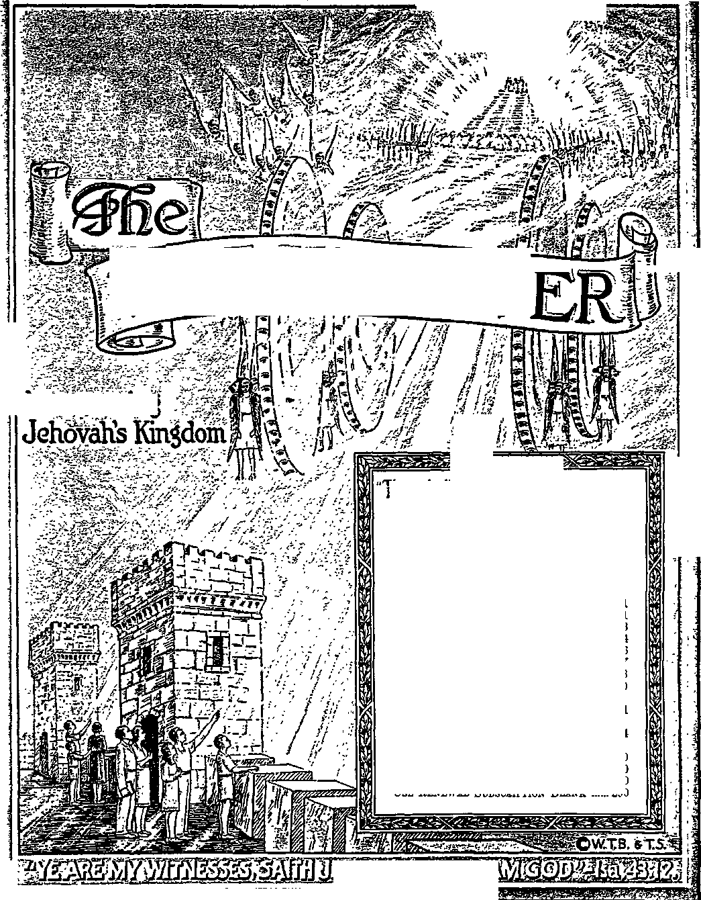

SSEESte^SSE^
&ic^^;&rssssi
'gcjrWg-^-g-^-s
glMBOW
WffiSTOW
Announcing
ft ru
-Ezekiel 35:15.
Vol. LXVIII Semimonthly No. 19
OCTOBER 1, 1947
CONTENTS
The One King for All the Earth ....291
Joash, Zealous Under Good Counsel .. 300 Assemblies in the Rhone Department
and Switzerland .......................
301
School of Gilead Graduates
Ninth Class ...............................
“Fearless Against Conspiracy”
Testimony Period ....................
“Watchtower” Studies ..................
Eastern Seaboard Convention .....
Use Renewal Subscription Blank
304
290
290
290
290
Published Semimonthly By
WATCH TOWER BIBLE 6 TRACT SOCIETY 117 Adams Street - Brooklyn 1, N.Y., U.SA.
Otficbbs
N. H. Knobb, President Grant Suiter, Secretary
“And all thy children shall be taught of Jehovah; and great shall be the peace of thy children.” • Isaiah 54:13.
THE BIBLE CLEARLY TEACHES
THAT JEHOVAH Is the only true God, from everlasting to everlasting, and is the Maker of heaven and earth and Giver of life to his creatures; that the Word or Logos was the beginning of his creation and his active agent in creating all other things; and that the creature Lucifer rebelled against Jehovah and raised the Issue of His universal sovereignty;
THAT GOD created the earth for man, made perfect man for the earth and placed him upon it; that man yielded to unfaithful Lucifer, or Satan, and willfully disobeyed God’s law and was sentenced to death; that by reason of Adam’s wrong act all men are born sinners and without the right to life;
THAT THE LOGOS was made human as the man Jesus and suffered death in order to produce the ransom or redemptive price for obedient men; that God raised up Christ Jesus divine and exalted him to heaven above every other creature and clothed him with all power and authority as head of God’s new capital organization;
THAT GOD’S CAPITAL ORGANIZATION is a Theocracy called Zion, and that Christ Jesus is the Chief Officer thereof and is the rightful King of the new world; that the faithful anointed followers of Christ Jesus are Zion’s children, members of Jehovah's organization, and are His witnesses whose duty and privilege it is to testify to Jehovah’s supremacy and declare bls purposes toward mankind as expressed In the Bible;
THAT THE OLD WORLD, or Satan’s uninterrupted rule, ended A.D. 1914, and Christ Jesus has been placed by Jehovah upon the throne, has ousted Satan from heaven, and now proceeds to vindicate His name and establish the “new earth”;
THAT THE RELIEF and blessings of the peoples can come only by Jehovah’s kingdom under Christ, which has begun; that His next great act is to destroy Satan’s organization and establish righteousness completely in the earth; and that under the Kingdom the people of good-will surviving Armageddon will carry out the divine mandate to “fill the earth” with righteous offspring, and that the human dead in the graves will be raised to opportunities of life on earth.
ITS MISSION
THIS Journal is published for the purpose of enabling the people to know Jehovah God and his purposes as expressed in the Bible. It publishes Bible Instruction specifically designed to aid Jehovah’s witnesses and all people of good-will. It arranges systematic Bible study for its readers and the Society supplies other literature to aid in such studies. It publishes suitable material for radio broadcasting and for other means of public instruction in the Scriptures.
It adheres strictly to the Bible as authority for its utterances. It is entirely free and separate from all religion, parties, sects or other worldly organizations. It is wholly and without reservation for the kingdom of Jehovah God under Christ his beloved King. It is not dogmatic, but Invites careful and critical examination of its contents in the light of the Scriptures. It does not Indulge In controversy, and Its columns are not open to personalities.
Notice to Subscribers: Remittances should be sent to office in your country In compliance with regulations to guarantee safe delivery ot money. Remittances are accepted at Brooklyn from countries where no office is located, by international money order only. Subscription rates in different countries are stated below in local currency. Notice of expiration (with renewal blank) is sent at least two issues before subscription expires. Change of address when sent to our office may be expected effective within one month. Send your old as well as new address.
Please address the Watch Tower Society in every case.
Offices Yearly Subscription Rate
America (17. S.), 117 Adams St., Brooklyn 1, N. Y.
Australia, 7 Beresford Rd., Strathfleld, N. S. W.
England, 34 Craven Terrace, London, W. 2
India, 167 Love Lane, Bombay 27 Be. 3/8
Jamaica, 151 King St, Kingston
New Zealand, G. P. O. Box 30, Wellington, C. 1
Translations of this journal appear in many languages.
ALL SINCERE STUDENTS OF THE BIBLE who by reason of Infirmity, poverty or adversity are unable to pay the subscription price may have The Watchtower free upon written application to the publishers, made once each year, stating the reason for so requesting it. We are f;lad to thus aid the needy, but the written application once each year s required by the postal regulations.
Printed in the United States of America
Entered as second-class matter at the post office at Brooklyn, N. Y., under the Act of March 3, 18 79.
“FEARLESS AGAINST CONSPIRACY” TESTIMONY PERIOD
October is annually a special testimony-period month, and this year it is designated “Fearless Against Conspiracy” Testimony Period. The fact today of world conspiracy against Jehovah God and his kingdom by Christ cannot be denied, and it falls not amiss that during this special testimony His fearless publishers will offer the challenging book "Let God Be True”, making it their initial offer on a contribution of 35c, American, or the equivalent of this in foreign lands. Many new Watchtower readers doubtless feel emboldened by its message to take part in this special effort to place the said book and to lay the foundation for future studies of the Bible with it in the private homes of the obtainers. We invite all such into the ranks of active publishers of God’s presentday message. In harmony therewith we wait to hear from you if wanting to get instructions and any references to companies or groups with whom you can associate unitedly in this privilege of service. For the part that it plays in compiling a world-wide report, we ask for your report of work at the end of October.
“WATCHTOWER” STUDIES
Week of November 9: “The One King for All the Earth,” fl 1-21 inclusive, The Watchtower October 1, 1947.
Week of November 16; “The One King for All the Earth,” If 22-43 inclusive, The Watchtower October 1, 1947.
EASTERN SEABOARD CONVENTION
For the benefit particularly of the brethren living east of the Mississippi river a late autumn convention has been arranged for November 21, 22, 23, in the eastern seaboard city of Philadelphia, Pa. The spacious Convention Hall at 34th Street near Spruce, in that city, has now been engaged for the three-day assembly. At this convention the president of the Watch Tower Society and other official members will be present to serve on the platform as part of a specially prepared program.. The public address will be upon the subject, “Permanent Governor of All Nations.” Brethren that can manage their affairs so as to attend should at once get in touch with the Watchtower Convention Committee, at 1343 W. Venango Street, Philadelphia 40, Pa., for rooming assignments or other information. Kingdom publishers may also consult the October issue of the Informant for additional details.
USE RENEWAL SUBSCRIPTION BLANK
The renewal blank sent you prior to the expiration of your Watchtower subscription should be filled out and returned to the Brooklyn office or to the Branch office in the country where you reside. Servants in the companies, and individuals, when sending in renewals for The Watchtower, should always use these blanks. By filling in these renewal blanks you are assured of the continuation of your Watchtower from the time of expiration, and without delay. It will also be a great help if you sign your name uniformly, and note any recent change of address, on the renewal slip.
Vol. LXVIII October 1, 1947 No. 19
"My heart swelleth with a good speech; I say, 'My works shall be for the king’:. . . Instead of thy fathers shall be thy children: thou wilt appoint them as princes in all the land.”
—Ps. 45:2, 17, Leeser’s Translation.
JEHOVAH’S inspired poet and prophet looked down the long corridor of more than '2,500 years to this age of the atomic bomb and the United Nations. In his mind there was no uncertainty on the questions, "Who should rule the earth ? and, Who will eventually rule it ? In a book the circulation of which keeps on surpassing that of any other book in history, namely, in the Bible, the poet-prophet made bold to declare his personal conviction as to who should be lung over all the earth, and also his prediction as to who it will be without fail, all enemies to his rule notwithstanding. The prophet died hoping to return to life on earth by a resurrection when his chosen world-ruler should fully be in power, having defeated decisively all enemies opposing his reign. The poetprophet still lies dead, but evidently not for much longer. Yet his prophecy still lives, and the force of it was never more powerful than now to assist us to decide on world rulership.
2 In this time of conflicting ideologies the prophet of Jehovah God is not here to stand forth personally on the stage of this divided world and recite his psalm declaring his choice and making his prediction concerning the ruler of a new world of righteousness. Others must do so for him. Who will they be? or, Who are they? They are persons filled with the same overpowering convictions as the prophet’s; persons as fully devoted to the same God as he was; persons determined to be witnesses for Him and His King, just as the poet-prophet was. In the prophet’s day and thereafter his poem was sung to musical accompaniment by the chorus of trained singers at the temple in Jerusalem. “Korathites” they were called. Hence the poem had the dedication heading: “For the Chief Musician; set to Shoshannim [Lilies]. A Psalm of the sons of Korah. Maschil. A Song of loves.”—Heading of Psalm 45, American Standard Version.
3 Sung to the tune of “Shoshannim” or “Lilies”, this lyric poem was a “maschil” or “instructive psalm”
1. On what questions does the poet-prophet show no uncertainty?
2, 3. (a) What kind of persons must recite his poem today? (b) How must this poem be sung, and by whom ? to all that heard the chorus sing it at the temple, and its theme was the kingdom of God by his Messiah. The singers were the trained male members of the house of Korah, a family of consecrated Levites who were dedicated to Jehovah’s service at the temple, and particularly to the singing under the leadership of the "chief musician”. When singing this song of Kingdom instruction, these consecrated singers were the witnesses of Jehovah God. Witnesses of Jehovah persist to this year 1947, and they are the consecrated followers of Jehovah’s appointed King of the new world of righteousness. It is their honored commission to take up the significant psalm sung by those ancient Korathites and to sing it forth with all the courage of the prophet’s conviction to all the nations in their present dilemma. As these modern-time singers in Jehovah’s service study and ponder over this poem which sets forth the one hopeful solution to all mankind’s problems, their hearts are stirred at the import of the poem. Their hearts swell at its grandeur, and boil and bubble up with the desire to make some vocal expression. Their mouths just cannot be kept still from making a joyful expression regarding Jehovah’s anointed King.
WHY THE DECISION FOR HIM
* “My heart overfloweth with a goodly matter; I speak the things which I have made touching the king: my tongue is the pen of a ready writer.” (Ps. 45:1, Am. Stan. Ver.) Or, as the Jewish Leeser’s translation of 1853 quite reasonably translated the Hebrew text: “My heart swelleth with a good speech; I say, ‘My works shall be for the king:’ my tongue is the pen of a ready writer.” It is a good theme. In fact, there is no theme in the universe nobler than this about a king who will indeed rule “by the grace of God”. He has not been anointed with some ointment by a religious clergyman in an abbey, cathedral or basilica, but has been anointed to office by Jehovah God himself and with the full measure of the holy spirit or invisible active force of God. He is Almighty
4. Why Is the king here song about the right king?
God’s choice for king according to God’s own law of ’ The psahnist-prophet now tells why his decision
succession from King David of Jerusalem, with whom Jehovah God made a covenant for an everlasting kingdom. (2 Sam. 7:8-17) According to the king’s forefathers in the line of succession, and according to the sworn oath of the Most High God, this king is without any mistake the right king. He has the divine support to destroy all the enemies of God and man, and to bring in upon this earth an endless era of unfluctuating prosperity, happiness, peace and life.
5 Not amazing, then, that those who come to know and appreciate what the poet-prophet is here inditing bubble over irresistibly with the good news. They openly declare themselves to be for this world ruler. They shape their affairs in life in order to serve him and to advance the interests of his kingdom. In the language of Psalm 45 they say with decisiveness: “My works shall be for the king.” They are uncompromising in that position. In order to specialize on works for the King and to speak loyally about him they do not divide their time and attention and meddle in with the affairs of this world. They have the reliable assurance from God’s Word of prophecy that his mighty King will straighten out the terrible mess of human affairs and do it with more than human power and wisdom. In harmony with this faith they do not join in with the political, commercial and religious movements of worldly men in a vain effort to save this world from extinction. They engage in no violent, revolutionary activities against the political parties, religious organizations or established governments of this world. Their ‘works for the King’ are peaceful works of education, advertising the King and the blessings of his reign to all the distressed people.
6 Hence, while we keep a strict neutrality toward the divided forces and controversial questions of this world, ours is an active neutrality, marked by zealous activity in educating the teachable people concerning the Kingdom. If we are not telling about it by word of the tongue, we are informing the people about it by the written or printed word, by distributing edition after edition of books, booklets and magazines all written on the theme of the Kingdom. This literature tells what the tongue of holy men, inspired by God’s spirit, has dictated and which has been written down in the recorded Word of God, the Bible. “My tongue is the pen of a rapid writer,” said the poet-prophet. A fellow-prophet, King David, said: “The spirit of Jehovah spake by me, and his word was upon my tongue.” (2 Sam. 23: 2, Am. Stan. Ver.) Likewise, when dictating Psalm 45 as fast as the writer could put it down with a pen, the psalmist’s tongue was inspired to dictate by the spirit of God.
5. “My works shall be for the king”—how?
6. How is ours an active neutrality in this world? is for Jehovah’s King to rule the new world which God has promised to set up for the blessing of all men of good-will. He addresses the King himself, to praise him for his qualifications as King which meet God’s requirements and also the needs of mankind’s situation. Who this King is to whom the psalmist addresses his words by inspiration of the spirit we are not left to guess. God lifted the matter out of the realm of supposition by inspiring another of his servants, the apostle Paul, to identify the King for us. The King, by reason of his descent naturally from King David, is called in prophecy “the Son of David”. But that was only according to the flesh. In actuality he is the only begotten Son of God. He is no other than the anointed and glorified Lord Jesus Christ. He is the One who, before his birth as a human, was used in heaven by Jehovah God in creating all the rest of the universe. He was born on earth at the town of Bethlehem as a human descendant of King David. This was in order that he might become the anointed “Son of David”. It was also in order that he might offer himself as a sacrifice to God and thus be able to ransom from sin and death all those believing in him, purging them from their sins in his cleansing blood.
8 He was raised out of death, which he suffered for his faithfulness to God. He was not raised as a human creature, for in that case he would have taken back his human sacrifice and he would also be still a man “made a little lower than the angels”. (Ps. 8:4,5; Heb. 2:5-9) To the contrary, the apostle Paul, in Hebrews, chapters one and two, sets out on an argument to show that Jesus Christ was not left “a little lower than the angels” but was, on the other hand, “made so much better than the angels” by getting an inheritance and name so far more excellent than theirs. This came about by raising him from the dead as a glorified spirit creature, immortal and divine, to life in heaven and by seating him “on the right hand of the Majesty on high”, namely, at the right hand of the Most High God, Jehovah. Therefore, in the Kingdom covenant that he made with King David, Jehovah said of Jesus Christ as “the Son of David” this: “I will be to him a Father, and he shall be to me a Son”; and He also said of this Son: “Let all the angels of God worship him.” (Heb. 1:1-6) Thereupon, to show that the station of Jesus Christ since his glorification in heaven is higher than that of the faithful angels, the apostle Paul then quotes verses six and seven of Psalm 45 and applies them to the glorified JesUs Christ. Yes, Psalm 45 finds fulfillment in Jesus Christ as King, but particularly so since A.D. 1914, because in that year the “times of the Gentiles” ended and,
7. Why praise this king? and who is be identified to be?
8. How do we prove Psalm 45 applies to Him? and since what time’ simultaneously, the glorious occasion came for the birth of the kingdom of God.—Rev. 12:1-5,10.
8 It does not matter whether Psalm 45 was using King Solomon as a typical example, or whether the prophet Isaiah wrote the psalm and used King Hezekiah as a typical model of the Messiah. We know that the words of Psalm 45 are prophetic and are now applicable to Jehovah’s glorified King, Jesus Christ. “Thou art fairer than the children of men: grace is poured into thy lips: therefore God hath blessed thee for ever.” (Ps. 45:2) No description is given us in the Bible of how Jesus looked as a man on earth, and all the paintings supposed to be of him by Roman Catholic and Protestant artists are sheer imagination and distortions. But for a certainty now since his heavenly glorification and becoming “the reflection of God’s glory, and the representation of his being”, Jesus Christ is fairer than all the children of men, and is more beauteous and glorious than the most exalted ruler on earth dressed up in all the ornaments and robes of state. (Heb. 1: 3, An Amer. Trans.) What also makes Jesus Christ most fair beyond comparing with any imperfect, sinful man on earth is his perfect qualities which so completely fit him for his high office and for the work he has to do in vindicating God’s name and sovereignty and in delivering and blessing all men of good-will. While on earth, “learned he obedience by the things which he suffered.” It was as regards obedience to Jehovah God that he was made “perfect through sufferings”, so that his integrity toward the Most High God is without a single flaw and no creature is equal to him in integrity.—Heb. 5:8; 2:10.
10 While on earth Jesus’ lips were constantly graced with the message of God’s kingdom. From the time of his anointing with the spirit of God he was persistently preaching the Kingdom both publicly and privately in the houses of the people. In order to silence his gracious lips, the human agents of Satan the Devil had him killed upon a stake of torture. But by meekly submitting to such death in proof of his loyalty to God’s work and will, Jesus displayed matchless beauty of holiness to his heavenly Father. Hence, in the words of the psalmist, “God hath blessed thee for ever.” Jehovah God did this by resurrecting him from the dead and exalting him to his own right hand, far above all other holy creatures in the universe. Now, as enthroned King, Jesus graces the lips of his faithful remnant on earth with the same message that graced his own lips on earth; and he supervises this anointed remnant in the fulfilling of his own prophecy: “This gospel of the [established] kingdom shall be preached in all the world for a witness unto all nations; and then shall the end come.”—Matt. 24:14.
9. How is this King “fairer than the children of men”?
10. Hov. was or is It true, “Grace is poured into thy lips”?
HE RIDES TO ARMAGEDDON
11 All the prophecies of God’s Word agree that at the end of this world when the occasion should have arrived for starting off the active reign of Jesus Christ in heaven and over our earth, there would be enemies defying him and opposing his rule. With the date of A.D. 1914 in prophetic view, the psalmist calls out to the enthroned King: “Gird thy sword upon thy thigh, 0 mighty one, thy glory and thy majesty. And in thy majesty ride on prosperously, because of truth and meekness and righteousness: and thy right hand shall teach thee terrible things.” (Ps. 45: 3,4, Am. Stan. Ver.) The sword is the symbol of war and also of authority and power from God to execute the enemies. (Rom. 13:1-4) Since God’s kingdom was born in the heavens in 1914, his mighty enthroned King receives the long-awaited authority and girds it upon him to take action against all enemies of Jehovah’s sovereignty.
12 Besides girding upon him this executioner’s authority pictured by the sword, he girds upon himself glory and majesty. That is, he takes to himself the glorious titles reserved for him and the bright-shining, conspicuous role of being Jehovah’s Chief Minister and Vindicator. We join the psalmist and bid this glorious, majestic King and Warrior to ride on prosperously to brilliant success. No such success do we pray upon the United Nations of today or any other human makeshift for God’s kingdom.
13 The truth of Jehovah’s universal sovereignty is being denied and fought against now when it must be exercised through his kingdom. Therefore the King must ride to the final war of Armageddon for the sake of establishing that truth and the truth of all of God’s written Word. As a man on earth the King was meek and lowly, and now his footstep followers show a like meekness. They are also greatly afflicted, persecuted and opposed in all lands. In support of the meekness exhibited by them in obeying God’s will and carrying on his work of gospel-preaching the King must ride. He must make their service to God prosper despite all the opposition.
14 The greatest act of righteousness is the vindicating of Jehovah’s universal sovereignty and sacred name; and for the sake of bringing about such righteousness in all the universe Jehovah’s King must ride on to victory. Revelation, the last book of the Bible, pictures him as riding a white horse and having a bow with which to shoot arrows at the opposing armies. (Rev. 6:1, 2; 19:11-16) As he rides on and overcomes all enemy resistance, his right hand of power in action teaches him, displaying to him what it can do in the realm of “terrible things” against the
11. How and when does this mighty One gird a sword on his thigh'’ 12. How does he gird glory and majesty upon him?
13. For what truth and meekness does he ride prosperously?
14, 15. (a) For what righteousness does he ride? (b) How does his ngnt hand teach him “terrible things”, and what are they?
Devil’s organization in heaven and in earth. The Revelation, in chapter twelve, bares to our eyes that, immediately after the birth of God’s kingdom and the enthronement of his King in the heavenly seat, this mighty one who is like Jehovah God began a vigorous warfare against Satan and all his invisible demon hosts. He toppled them down from the heavens and confined them to this earth, where they are still free to bring great woes to men on land and sea.—Rev. 12:1-13.
15 However, things more terrible than this are due to come from the King’s mighty right hand at the final battle of Armageddon. Predicting that destruction is certain to the Devil’s invisible demon organization and also his visible human organization of politics, commerce and demon religion, the psalmist says to Jehovah’s King now riding: “Thine arrows are sharp; the peoples fall under thee; they are in the heart of the king’s enemies.” (Ps. 45: 5, Am. Stan. Ver.) Like a dead-shot who does'not miss to a hairbreadth, the King -will speed his arrows of destruction to the heart of every one lined up with this ■wicked world in resistance to his righteous government. All the peoples in the Devil’s conspiracy against him will fall in death on the blood-stained field of Armageddon. (Ps. 110:5,6; Jer. 25:32-36) Those who are wise-hearted will now fear and cease resistance and will serve him.—Ps. 2:10-12; Rev. 16:14-16.
HIS THRONE
18 The next two verses of Psalm 45, namely, verses 6 and 7, are the ones that Paul quotes to point out Jesus Christ to be the glorified King, made far better than the angels. Showing the subserviency of the holy angels in contrast with the superior, ruling position of the only begotten Son of God, the apostle Paul writes, at Hebrews 1:7-9: “And of the angels he saith, Who maketh his angels ■winds, and his ministers a flame of fire: but of the Son he saith, Thy throne, 0 God [ho Theos), is for ever and ever; and the sceptre of uprightness is the sceptre of thy kingdom. Thou hast loved righteousness, and hated iniquity; therefore God, thy God, hath anointed thee with the oil of gladness above thy fellows.” (Am. Stan. Ver.) Paul here quotes from the Greek Septua-gint Version of Psalm 45.
lf This is one of the Scripture readings which are especially quoted and strongly relied upon by religious clergymen who teach the doctrine of a “trinity of one God in three persons”. They say, ‘See, the term “God” or “ho Theos” in the original Greek text is here addressed to Jesus Christ the Son of God; and this proves he is the same as Jehovah God and that he and Jehovah God are “one in person, equal in power and glory”.’ Such trinitarians further re-16. What verses of Psalm 45 does Paul quote? from what version? 17. What argument do trinitarians make on Hebrews 1:8, 9? mind us that in Psalm 45: 6, 7, from which Paul made this quotation, the Hebrew word translated “God” and addressed to the Son of God is “Elohim”; and the title Elohim is the very first term or name by which the Supreme God has made himself known to the children of men, at Genesis 1:1, the opening verse of the Bible. So, then, let us now quote Psalm 45:6,7: “Thy throne, 0 God [Elohim], is for ever and ever: a sceptre of equity is the sceptre of thy kingdom. Thou hast loved righteousness, and hated wickedness: therefore God [Elohim], thy God [Elohim], hath anointed thee with the oil of gladness above thy fellows.”—Am. Stan. Ver.
18 Psalm 45 is in Book II of the Psalms. This book includes the Psalms from 42 to 72. In this second book the title Elohim occurs more times than the title El, meaning God, and the name Jehovah. The title Elohim occurs 193 times (twice with Jehovah), but the title El, 15 times, and the name Jehovah, just 27 times. For such reason Book II of Psalms is termed Elohistic. The question now is, Does Psalm 45:6 apply the title Elohim to the Messiah, Jesus Christ the Son of God? Also, since Paul quoted practically word for word from the Greek Septua-gint Version of this psalm, is the title ho Theos applied to the only begotten Son of God? In discussing this point the trinitarians insist that Elohim is in the vocative case or in the form of a person addressed, and hence that it means “0 God” and is addressed to the King, the Son. In “proof” of this they also argue that in the ancient, pre-Christian Septuagint Version the Greek translation of Elohim is ho Theos. They say that ho Theos too is in the vocative or address case and is therefore addressed to Messiah, the Son of God. However, we note that many scholars object to this, and most of them are trinitarians, too.
18 For the consideration of all honest-hearted, un-bigoted persons the facts are these: In the original Hebrew text of Psalm 45: 6 there is not a single verb (or word expressing action or state), and therefore when translating into English we must understand or insert a verb according to the sense of the verse. For this reason that title Elohim could grammatically be in the genitive or possessive case and could mean “of God”. High scholarship agrees with that fact, and, accordingly, the Jewish Leeser translation of this verse in question reads: “Thy throne, given of God, endureth for ever and ever: the sceptre of equity is the sceptre of thy kingdom.” This agrees with the angel Gabriel’s words to the human mother of Jesus: “He shall be great, and shall be called the Son of the Most High: and the Lord God shall give unto him the throne of his father David.” (Luke 1:32, Am. Stan. Ver.) In agreement with the Leeser trans-18 How is Book II of Psalms Elohistic, and in what case is Elohim ? 19. If Elohim is in the genitive case, how could the verse read? lation the reading in the lower margin of the American Standard Version, which gives another possible reading of Psalm 45:6, says: “Thy throne is the throne of God &c.” This agrees also with the Scripture teaching that the source of Messiah’s throne is Jehovah God and that Messiah sits in the throne as the representative of Jehovah God. This was typified by King Solomon, possibly the king addressed in a typical way in Psalm 45. Concerning Solomon it is written: “Then Solomon sat on the throne of Jehovah as king instead of David his father.” “He hath chosen Solomon my son to sit upon the throne of the kingdom of Jehovah over Israel.”—1 Chron. 29:23 and 28: 5, Am. Stan. Ver.
20 The term Elohim at Psalm 45: 6, instead of being in the vocative or in the genitive case, may also be in the nominative case, in the same case as the subject of the sentence, “Thy throne.” In such an instance Psalm 45:6 could read: “Thy throne is God”; that is to say, God is the foundation and support of Messiah’s throne. The Greek Septuagint translation agrees with the understanding that Elohim is in the nominative case and hence translates it ho Theos. A number of modern translators translate it that way at Hebrews 1:8, where Paul quotes from the Greek Septuagint. An American Translation (of 1939) reads: “God is your throne forever and ever!” Archbishop Newcome’s New Translation (1808) reads: “God is thy throne for ever and ever.” The sublinear reading of The Emphatic Diaglott also shows this reading as possible at Hebrews 1: 8.
21 The American Standard Version in its marginal reading at Hebrews 1:8 says: “Thy throne is God for &c.” The Revised Standard Version of 1946 is a revision of the American Standard Version, and in its marginal reading it keeps the old suggestion and says: “God is thy throne.” Moffatt’s translation of 1934 reads: “God is thy throne for ever and ever.” (Besides the foregoing, see the note at the foot of this column.*) Hence, to sum up all this discussion, we can say that neither at Psalm 45: 6 nor at Hebrews 1:8 do the trinitarians have Scriptural proof
* Moffatt’s Bible translation at Psalm 45: 6 further discounts the trinitarian argument, for there we read: “Your throne shall stand for evermore.” Why no mention of God here? It is because Moffatt adopted the view advanced by some that in the original Hebrew text the letters yhyh (pronounced yihyeh) appeared at first, but that the Elohistic scribe who corrected Book II of the Psalms mistook it to be Yhvh (pronounced Yahweh), which is God’s name, and accordingly he corrected the text and changed it to Elohim, to make Book II of the Psalms more Elohistic. If the original Hebrew reading was thth, meaning “shall be”, then Psalm 45: 6 should read like Moffatt’s translation, namely: “Your throne shall be for evermore.” This does away with any mention of God in this verse.
In a note on Psalm 45: 6 in The Polychrome Bible, by J. Wellhausen, it says: “Heb. ¥H¥H (yihyeh), which a subsequent 20, 21. (a) If Elohim Is in the nominative case, how could the verse read? (b) So, then, how do we sum up this discussion? that the Messiah, Jesus the Christ, is the second person of a supposed “trinity” and is the same as Jehovah God in substance and equal to Him in power, glory and eternity. Jesus is Jehovah’s firstborn Son and anointed King.
22 Men and women have long sighed and pined for a righteous government. Let them all turn now to Jehovah’s King for such a satisfying government, because his scepter will be a right scepter, one of equity and with nothing crooked about it in the least. The righteousness of his rule is guaranteed to us for the reason given at Psalm 45: 7 concerning the King: “Thou hast loved righteousness, and hated wickedness.” (Am. Stan. Ver.) For thus loving and hating, Jesus on earth suffered religious persecution down to a disgraceful death at the hands of his persecutors. For this very cause Jehovah God Almighty raised him out of death and exalted him to His own right hand to a most trustworthy and responsible position, where he could fight for righteousness and enforce it with all the needed power in heaven and in earth. He is “Jesus Christ the same yesterday, and to day and for ever”, says Hebrews 13:8. “Therefore God [Elohim), thy God [Elohim), hath anointed thee with the oil of gladness above thy fellows.”—Ps. 45:7.+ .
23 That anointing does not refer to Jesus’ being anointed with the holy spirit right after his baptism in the Jordan river by John the Baptist. He is anointed with the “oil of gladness” after he is glorified in heaven. This anointing refers to his installation in the throne to be king, in 1914. This was a most refreshing experience after he had waited for nineteen centuries at God’s right hand. It ushered him into the joy and gladness of Jehovah’s reigning as King over all the universe, including our earth. This editor mistook for Yhvh, i.e. Jhvh (Heb. Yahveh-, . . . ), and accordingly substituted Elohim = God.”
In its 1930 edition Weymouth’s New Testament in Modern Speech has a footnote on Hebrews 1:6, and concerning the expression “0 God” it says: “Psalm 45 is a Royal Marriage Song, and this translation involves the direct address of an earthly king by the title ‘God.’ The obvious difficulty has led to various conjectures: (1) ‘Thy throne is the throne of God’ (so Revised Version margin in the Psalm). (2) ‘Thy throne is God for ever and ever.’ (3) A corrupt Hebrew text, ‘Yahweh’ (God), being a mistake for the almost identical Hebrew word meaning ‘shall be’ —‘Thy throne shall be for ever and ever.’ This conjecture is widely adopted, . . . . ”
t In a footnote on Psalm 45:7 Rotherham’s Studies in the Psalms calls attention to another likely Elohistic alteration, and concerning the expression “God, thy God” it says: “Doubtless for an original ‘Jehovah thy God’.” So Delitzsch says also.
Also in The Polychrome Bible J. Wellhausen says in his notes on Book II of the Psalms: “The Second Book (Pss. 42-72) is distinguished from the First by a preference for the appellation God (Heb. Elohim) instead of the proper name Jhvh ... In fact, we have God, my God, instead of Jhvh, my God. . . . This peculiarity, found in the Third Book also (for example, God Sabaoth instead of Jhvh Sabaoth, . . .), is due to a reviser.”
22. How does Psalm 45:7 guarantee a righteous rule by the Klug? 23. When and how was he anointed with the “oil of gladness”! was foreshadowed by the anointing of Solomon at the time he was made king on the throne to succeed his father David, an event that was marked by great gladness on the part of Jehovah’s people over whom Solomon was anointed to reign.—1 Ki. 1: 32-40; 1 Chron. 29: 22.
2* This joy of being crowned, enthroned and actively entering in upon the opportunities of his kingship is the pleasure which Jesus Christ shares with his followers whom he approves as good and faithful, when he says to them: “Enter thou into the joy of thy Lord.” (Matt. 25:21,23) The gladness with which Jehovah his God anoints him exceeds that of all fellow kings. This does not mean kings that have reigned upon earth since Jesus' ascension to heaven in 33 (A.D.), but means all the kings of the lineage of David that reigned upon the throne at Jerusalem from David to Josiah. They were all fellows in sharing in the benefits of the Kingdom covenant that God made with King David. But that Kingdom covenant reaches its climax and complete fulfillment in Christ Jesus, for his kingdom and gladness are for evermore. Naturally, of course, his measure of gladness is above that of his joint-heirs in the Kingdom, his faithful footstep followers over whom Jehovah God has appointed him to be the Head. As it is written, at Ephesians 1:17-23: “God . . . gave him to be the head over all things to the church, which is his body.” This church-body becomes his bride in heaven.
ROYAL WEDDING
25 Psalm 45 correctly presents the matter when it describes the King’s wedding as taking place after his triumphant warfare against the enemies of his reign. For nineteen centuries now the members of his bride-to-be have been in process of being taken out from among mankind, starting with the days of the apostles. This was why the apostle Paul said to the congregation at Corinth which he established: “I betrothed you to Christ, to present you as a pure bride to her one husband.” (2 Cor. 11:2, An Amer. Trans.) After the kingdom of God is established in 1914, the Bridegroom-King begins to take the members of this Bride company to himself by resurrecting the faithful members thereof who have died and who have till then slept in the graves. (Rev. 19: 6-9) There is yet on earth in the flesh a remnant of the consecrated members of the “church which is his body”, who are espoused to the Bridegroom-King. His marriage to her will not be fully achieved or consummated until the last of the members of this remnant has finished his course and been changed to a spirit creature in the resurrection from the dead and been personally united with Christ Jesus in the throne of his kingdom.
24. How is he thus anointed “above thy fellows’’?
25. When and how is the King’s marriage fully consummated?
28 At his coming to God’s spiritual temple for inspection and judgment, for which A.D. 1918 is the generally accepted date, the Bridegroom-King begins to receive his bridal company to himself at the temple. He does so by resurrecting the sleeping faithful ones from the dead and ushering them into heavenly spiritual life with himself. The faithful remnant espoused to him behold him at the temple by their eyes of faith and, in the language of Psalm 45:8, 9, they say with delight: “All thy garments smell of myrrh, and aloes, and cassia; out of ivory palaces stringed instruments have made thee glad. Klings’ daughters are among thy honorable women [or, thy female servants]: at thy right hand doth stand the queen in gold of Ophir.” (Am. Stan. Ver.; Rotherham Psalms) They detect his presence by his robes of royal office which are so heavily perfumed that it is as if he were clothed with the fragrance of these redolent substances, myrrh, aloes, and cassia. Actually this is the wholesome fragrance of the knowledge of God. Christ Jesus at the temple now sheds this knowledge upon the faithful remnant, and these in turn have the pleasure of spreading the sweet perfume of this knowledge of God and his kingdom to a multitude of persons of good-will. Like the apostle Paul they can say: “Thank God! he always leads me in his triumphal train, through Christ, and spreads the perfume of knowledge of him everywhere through me as his censer-bearer. Yes, I am the fragrance of Christ to God, diffused among those who are being saved.” (2 Cor. 2:14,15, An Amer. Trans.) Those not pleased with this fragrance will perish at the battle of Armageddon.
27 Befitting the occasion, there must be music in heaven, of an exquisite kind, like that of stringed instruments issuing from palaces adorned with inlaid ivory where the most skillful musicians are playing. No doubt, along with this music, the Bridegroom-King finds the music of the voices of his devoted remnant on earth sweet to his ear as these sing forth to all nations the message of God’s kingdom and the praiseworthy qualities of his anointed King. (S. of S. 2:14) The daughters of kings are said to be among his honorable women dear to him. A great many Hebrew manuscripts say these kings’ daughters were among his female servants.* Their being royal ladies means that they are an honor to the Bridegroom-King. Being devoted to his service also, they seem to picture in the modern-day scene the multitude of persons of good-will who consecrate themselves to God through Christ and who then align themselves with the remnant of his bridal company to honor and serve him. The “queen” gleaming in
* See footnote of Rotherham’s translation at Psalm 45: 9, also his Studies in the Psalms at the same verse and his footnote thereon.
26. How does he begin taking his bride, and how does he smell? 27. What is the music, the honorable women, and the queen? garments inwrought with most precious gold from Ophir and standing at the King’s right hand of favor pictures the church herself in complete number of members. Those of the remnant yet on earth are needed to make up her completeness by proving to be faithful to the Bridegroom to the death and then being resurrected to life with him in his Father’s presence.
28 Jehovah God, through Christ Jesus, gives life to the church, and she is therefore His “daughter”. By the spirit of inspiration in the psalmist Jehovah addresses the church, or rather now the remnant of her yet in the flesh: “Hearken, 0 daughter,* and consider, and incline thine ear; forget also thine own people, and thy father’s house: so will the king desire thy beauty; for he is thy lord; and reverence thou him. And the daughter of Tyre shall be there with a gift; the rich among the people shall entreat thy favor.”—Ps. 45:10-12, Am. Stan. Ver.
29 According to ancient Oriental custom the bride may never have seen the face of her bridegroom before this occasion, especially as this was a royal wedding and hence a state affair. She would therefore have to forget close relatives left behind and persons known and dear to her through familiarity, and to fix her affections upon her bridegroom and make up her mind to love and reverence him as her husbandly head, for the kingdom's sake. Then her bridegroom would find her lovable with more than outward charm and winsomeness. If she was of a nation different from that of her Israelite bridegroom, then she would have to forget her own nation and also its religious gods, and say as Ruth said to her Jewish mother-in-law Naomi: “Thy people shall be my people, and thy God my God.” (Ruth 1:16) Then she will share with her bridegroom in his honors, and his allies will also seek her favor.
30 Christ Jesus, the antitypical Bridegroom, was a Jew according to his earthly connections. From the time of the conversion of the Italian Cornelius the non-Jews or Gentiles have been admitted into his espoused church. Apparently, the majority of the members of the church will prove to be of Gentile extraction, never having seen the face of Jesus when on earth. But all members of the betrothed church, Jew and Gentile alike, must forget human relations and national connections. That is, they must not let these influence and overpower them and hold them back from forsaking all and going to the One with whom God arranges for them to become married. Through the gospel message they hear God’s invitation; they consider it and humbly bend a favorable
• Even the Jewish authors of the Targums or Chaldee Paraphrases suggest, on Psalm 45:10, that Messiah’s “bride” is to be no individual woman but “a congregation”.
23. Whose daughter is the queen and how is she now addressed?
29, 30. How did the ancient daughter obey this exhortation? and how does rhe antitypicai daughter obey it? ear to it, and then they fix their affections on the promised Bridegroom, Jesus Christ.—Col. 3:1-4.
31 The remnant today are no exception to this. Having consecrated themselves to God and having been begotten by the spirit of life as his children and then having received his invitation to become Christ’s joint-heirs, they must forget the things behind and cultivate and strengthen their appreciation and devotion toward the things set before them by their heavenly Father. For the Kingdom’s sake they will not let human relations and earthly nationalities govern their choices, decisions and course of action. They turn the back upon the religious, commercial and political gods of this world, and worship the God of their Bridegroom-King. They honor the King as they honor the Father. They bow to the will of their heavenly Father in mating them up with his anointed King: “whom having not seen, ye love.” (1 Pet. 1:8) They believe Psalm 45 regarding his beauty, and they try to appear lovely to his eyes, if not to men’s eyes, that he may desire their spiritual beauty and take them to himself in the heavenly kingdom. Because of seeing this faithful devotion of the remnant to Jehovah’s King, some persons see these are real Christians, and now entreat their favor or spiritual help. Such were foretold by the expressions “the rich among the people” and “the daughter of Tyre”. When David and Solomon were kings, the daughter, that is to say, the city, of Tyre was in alliance with the kingdom of Israel, to picture those of good-will who now ally themselves with God’s kingdom and its King.
THE QUEEN AND HER COMPANIONS
32 The description that now follows compares with that of “the holy city, new Jerusalem, coming down from God out of heaven, prepared as a bride adorned for her husband”. She is said to be “the bride, the Lamb’s wife”. (Rev. 21:2,9-27) Evidently from the psalmist’s viewpoint the royal bride has been brought from her earthly father’s home to a palace or suitable house within Jerusalem, where she waits to be led in a most joyous procession to where her longing bridegroom waits for her. “The king’s daughter within the palace [or, in the inner chamber] is all glorious: her clothing is inwrought with gold. She shall be led unto the king in broidered work [or, on tapestry of divers colors]: the virgins her companions that follow her shall be brought unto thee. With gladness and rejoicing shall they be led: they shall enter into the king’s palace.”—Ps. 45:13-15, Am. Stan. Ver.; Leeser; Rotherham’s Psalms.
33 The gloriousness with which the bride is attired and in which she is conducted to her bridegroom and king pictures the celestial glory with which the com-
31. How are the remnant today no exception to this course of action? 32. How is the bride described as being led to the King?
33. How is the “bride” now brought glorious, and to whose joy? pleted church is presented to Christ Jesus in the kingdom above, following the resurrection of the last member of her. “It is sown in dishonor; it is raised in glory.” (1 Cor. 15:42,43) The heavenly Bridegroom awaits the rapturous moment when he may present himself ■with his church-bride at his side before the heavenly Father: “in order to have the church as his very own, standing before him in all her glory, with never a spot or wrinkle or any such flaw, but consecrated and unblemished.” (Eph. 5:27, Moffatt) This joy of having this lovely “bride” was part of the joy that was set before Christ Jesus, the beginner and perfecter of our Christian faith; and for her sake he gave himself in sacrificial death, willing to endure the tortures of the tree and despising the shame connected therewith.—Heb. 12:2; Eph. 5:25.
34 At the time of marriage the “bride”, this daughter of the “King of eternity"’, Jehovah, is well attended, to add to the splendor and dignity of the event. This fact foretells something pleasant for our day since A.D. 1918. The psalmist, like a reporter at the wedding, tells us: “The virgins in her train, her companions, are brought to you. With gladness and joy are they brought in; they enter the palace of the king.”—Ps. 45:14,15, An Amer. Trans.
35 These virgin companions of the bride portray the consecrated persons of good-will whom the Good Shepherd Christ Jesus is now gathering. He is bringing them into fellowship with the remnant that represents the bride. He speaks of them as “other sheep”, because these persons do not have a heavenly destiny and inheritance, but have the divine promise of eternal life on earth under the Kingdom. Their present position in companionship with the remnant of the bride is one of privilege, bringing great inward pleasure. Although they are not of the remnant with the prospect of heavenly marriage, they are glad in what the Lord provides for them. They are glad He associates them -with his Theocratic organization as represented on earth by the remnant who are espoused to the Head of the Theocratic organization. The joy these virgin companions have at present is not that of fulfilling the divine mandate to marry, be fruitful and fill the earth with righteous offspring to be the earthly subjects of Christ. Their present privilege is that of serving God in company with the remnant. They consider this to be cause for the greatest joy, without anything to equal it in the future. Their present privileges will never be repeated in any future time after the battle of Armageddon. They rejoice because of the King’s joy at receiving the Kingdom and entering upon his work of restoring the pure worship of Jehovah God in the earth and of clearing out all those who reproach God’s
34. By whom is the bride described as attended, and why?
35. Who are the virgin companions now, and why are they joyful? name from the universe and introducing a righteous government over all the earth.
33 These modern-time virgins keep themselves pure and clean from this world and commit no spiritual fornication with it. (Jas. 4:4) -Hence the King now accepts their vows of allegiance and makes them the companions of his bridal remnant. Obediently they follow in the train of the remnant, assisting them to serve Jehovah God and to preach the good news of his kingdom by Christ. How do they “enter into the king’s palace”? Not by going to heaven with his bride, but by having present privileges of proclaiming the Kingdom in companionship with the remnant and then by living through to the time when the marriage of the heavenly Bridegroom and of his glorified bride, the church, will be carried through to include the final member of the bride class. It is just as when virgin bridesmaids, by entering into the royal palace after the bride, would see the marriage ceremony consummated. The Greek Septuagint, at Psalm 45:15, reads: “They shall be brought to the temple of the king.” (Thomson) This identifies the virgins with the “great multitude” described as in the temple, at Revelation 7:15. Surviving through to the climax of the marriage, they will witness all the changes and all the new relationships that this joyous nuptial event will mean for those on earth in the new world of righteousness.
INSTEAD OF FATHERS, PRINCES
37 Now the attention turns from the spiritual bride and her earthly virgin companions to the glorious King. The psalmist once more addresses himself to the King now about to undertake the responsibility of marriage to his God-given bride, and says: “Instead of thy fathers shall be thy children, whom thou shalt make princes in all the earth.” (Ps. 45:16, Am. Stan. Ver.) It is true that the Syriac Version of Psalm 45 has the pronouns thy and thou of this verse in the feminine gender, causing the verse thereby to be addressed to the bride, the church. Were that so, the “fathers” would he hers and the “children” would be hers. Her children would be the children of the church, that is to say, the members of the church, because the members of an organization are spoken of as its children. (Matt. 23:37; Luke 19:41-44) These members of the church she would make princes in the earth, just as the Roman Catholic religious organization enthrones its bishops in all the earth and styles them “princes of the church”. However, the Bible does not agree that the bride, the queen, takes duties out of the hands of her head, the King, and appoints his children to princely places. That is the King’s right and duty. Furthermore, in the original Hebrew text of Psalm 45:16 the pronouns
36. How do these as virgins “enter into the king's palace"? 37. To whom is Psalm 45:16 addressed, and why? thy and thou are in the masculine gender, showing that the verse regarding fathers and children is directed to the King Jesus Christ.—Matt. 20: 20-23.
38 According to the divine promise at Isaiah 9: 6, Christ Jesus will fulfill the titles “The mighty God [El Gibbor, not Elohim'], The everlasting Father, The Prince of Peace”. During his thousand-year reign he will give life to all of humankind on earth who believe on him and who render unbreakable obedience and fidelity to him as King. He died for all such earthly believers; and if they persist in their obedience and loyalty to him as God’s one King over all the earth, then their life will extend into all eternity to come. In this way he ■will become Everlasting Father to all such earthly believers, and will have many earthly “children”. But, reasonably, he will not appoint them all to be “princes” or rulers in all the earth, to act as the visible earthly representatives of the heavenly kingdom. Who, then, -will be made such earthly princes?
39 Evidently his “fathers” and other ancient men of a like degree of faithfulness to God and his Sovereignty. Fathers here seems to refer to Jesus’ faithful forefathers according to the flesh, just as, when addressing the bride at verse 10 above, it tells her to forget her father’s house. Such human forefathers of “the man Christ Jesus” would include King David, Jacob, Isaac, Abraham, Noah and Enoch. Since all of these are dead now for thousands of years, how could he make them “princes in all the earth”? By resurrecting them at God’s appointed time and then stationing them in various parts of the earth in princely positions to act for him. Whether he raises them before or after Armageddon we do not here discuss.
*° What Christ Jesus the King will do for his faithful “fathers” he will also do for other faithful men of old who were not his ancestors according to the flesh, such as Abel, Job, Moses, Joshua, Daniel, Nehemiah, John the Baptist, etc. Some of these faithful ancients are named in chapter eleven of the book of Hebrews. For this reason, evidently, Psalm 45:16 has long been confused with Hebrews 11:39, 40, which reads: “And these all, having had witness borne to them through their faith, received not the promise, God having provided some better thing concerning us, that apart from us they should not be made perfect.” (Am. Stan. Ver.) These two verses of Hebrews 11 could not refer to Jesus’ making his earthly “fathers” to be his sons and princes in all the earth, for Hebrews 11 names men not his fleshly forefathers and also mentions women, such as Sarah, Rahab, and women who “received their dead by a resurrection”, and then Hebrews 11 says that “these all, having had witness borne to them through their faith”, would not be made perfect in life apart from the Christian church, the bride of Christ. Psalm 45:16 says nothing about making mothers and women to be princesses.
“ Nevertheless, all those alluded to in Hebrews 11 are certain to be resurrected to life on earth under the King’s heavenly government. Women and men alike, they will eventually be perfected in their title to everlasting life in its fullness. But the “fathers” of Christ the King, and other faithful men of ancient times whom he will resurrect, will he choose to serve as visible princes for him in all the earth. Seeing that the uniting of the bride with her heavenly Bridegroom is now in progress through the resurrection of all those of the church dying faithful, we have reason to believe also that Christ Jesus the King will soon break the long sleep of death of those due to be made his visible princes in all the earth. When he wakes them, they will come forth from the tombs and be instructed about the established Kingdom and then be installed in office.
42 Such being the divine program set before Jehovah’s anointed King, every believer devoted to God and His universal sovereignty will agree that Christ’s government is the one government that will be perfectly righteous and meet the needs of all humanity, and that Christ Jesus is definitely the one King for all the earth.
43 If this is our strong conviction and unchangeable decision, then we can take up with determination the final words of the psalmist addressed to this one King: “I will make thy name to be remembered in all generations: therefore shall the peoples give thee thanks for ever and ever.” (Ps. 45:17, Am.Stan. Ver.) It remains for us to give energy and force to that declaration. How ? By now publishing in all the world for a witness to all nations this good news about the Theocratic Government of this one King of Jehovah’s appointment. The present-day “virgins” who are the companions of the King’s bride will do that very thing in company with the faithful remnant of his bride class. For their loving devotion to God’s one King and his royal interests, these virgin companions from among all peoples and nations will inherit everlasting life under his government. In what generations of children they bring forth under the Kingdom according to the divine mandate issued anew, they can make the name of their King to be remembered while they fulfill their duties as parental instructors. They will be a blessed part of those peoples who will live on earth as the happy subjects of Jehovah’s King and who will “give thee thanks for ever and ever”.
38. Who will be his “children”?
39. Who are the “fathers” that he makes “princes”?
40. What others does he also make princes?
41. Why may we believe he will soon make them princes?
42. What, then, should we believe as to government for ali the earth?
43. What words do we now take up with determination, and how?
JEHOVAH takes counsel with none. “With whom took he counsel, and who instructed him, and taught him in the path of justice, and taught him knowledge, and showed to him the way of understanding?” (Isa. 40:14, Am. Stan. Ver.) He gives counsel, and wise, meek creatures take it gratefully. His counsel stands, and its promised goodness is sure of fulfillment. Its sound wisdom is laid up in the inexhaustible storehouse of God’s Word, the Bible, where its treasuresome merit may be drawn upon by all those righteously disposed. (Prov. 2:7) Faithful prophets and priests in Israel gave good counsel based upon Jehovah’s requirements and purposes, and in the multitude of such Scripture-wise counselors there could be nothing but safety. Without such counsel the people would certainly fall to demon religion. (Prov. 11:14) The truth of the principle of safety under wise counselors and downfall under evil ones is exampled by a king in Judah more than twenty-eight centuries ago.
In 909 B.C. a woman usurped the throne of Judah through a campaign of murder. The bloody-skirted female was Athaliah, daughter of Jezebel. After her son Ahaziah was executed by Jehu at God’s command, Athaliah rose up and slaughtered all her son’s male offspring. At least, she supposed she had accounted for tlie dteath of all her grandchildren through Ahaziah, but actually a sister of Ahaziah slipped young Joash from among the king’s sons and caused him to be hid in the house of God. (“Joash” is the shortened form of “Jehoash”, which means “Jah bestows, is giver”.) There he remained in hiding for six long years while that political female Athaliah cursed the nation through her idolatrous reign.—2 Ki. 11:1-3; 2 Chron. 22:10-12.
But with the year 903 B.C. the tyranny of Athaliah and her violation of the Kingdom covenant that granted the throne of Judah to the sons of David came to a halt. Young Joash, son of former King Ahaziah, was now seven years of age. Jehoiada was high priest at the time, and was also husband of the woman instrumental in saving Joash from Athaliah’s purge. By careful planning with the chief ones of the house of David and a concentrating of the Levites at the temple and posting armed men at strategic places, the high priest brought forth the young Joash and presented him with a copy of the law in accordance with Deuteronomy 17:18-20. The crown was placed upon the head of Joash, and upon his anointing the rejoicing people clapped their hands and loosed their enthusiasm by cries of “Long live the king”.
The sound of the joyful uproar penetrated the palace walls and entered the ears of Athaliah, who thereupon hastened to the temple to ascertain the cause of the rejoicing and singing and music. When she saw the young king her cries were added to those of the throng, but not cries of praises or of long live the new king. Contrastingly, she screeched out her charge of “Treason! Treason!” How could such a person have the effrontery to hurl charges of sedition when she herself was guilty of that crime against God and against the Kingdom covenant made with the house of David? Her sham cries of treason only caused her to be thrown out of the temple precincts and slain.—2 Ki. 11:4-16; 2 Chron. 23:1-15.
High priest Jehoiada served as counselor to the young king, and at the outset of Joash’s reign made a covenant linking the king and the high priest and people together in a solemn agreement that they should be the Lord’s servants. Action followed in the wake of this meeting of the minds of the people on this vital issue of Jehovah’s worship, and in a body the coronation throng headed for the house of Baal that had been favored by Queen Athaliah. The Baal temple was leveled, the altars of the false gods were broken down, and his images smashed to pieces. The heathen priest of Baal was executed. On the heels of all this tearing down and rooting out of Baalism, a reconstruction work was effected relative to Jehovah’s true worship. Service appointments were made by Jehoiada to care for the temple worship that had been neglected during Athaliah’s tyranny.
As time passed young Joash showed the good effects of his early training and counsel from Jehoiada. The house of God had fallen into disrepair. Contributions for the upkeep of the temple had not been collected according to the commandment of God. “The sons of Athaliah, that wicked woman, had broken up the house of God; and also all the dedicated things of the house of the Lord did they bestow upon Baalim.” It was past time for a change, and the king caused a chest to be set up by the gate of the house of the Lord, and in that chest the princes and the people met their obligations for the upkeep of the temple. The willing giving of the reawakened people was more than adequate to finance the work of the masons and carpenters in repairing the temple. And of that left over, vessels of gold and silver for temple service were made. All.the days that the good counselor Jehoiada lived Jehovah’s worship was maintained at the temple, and King Joash showed zeal toward God and gained divine approval.—2 Ki. 11:17-21; 12:1-14; 2 Chron. 23:16-21; 24:1-14.
Apparently Joash was a weak character, for after the death of Jehoiada the good counselor evil counselors were able to sway him from the right paths of Jehovah’s worship and lead him and the nation into downfall. It appears that Joash was susceptible to flattery. The princes of Judah came unto him and did obeisance to the king and influenced him to hearken unto them. Jehovah’s worship was set aside and the gods of the heathens were served in groves and the people bowed down unto idols. Long-sufferingly, Jehovah God sent his prophets unto them to warn against the disastrous course they were taking; but to such good counsel neither the king nor the people would give ear.
So far sunk in the ways of religion were the king and the people that they even returned to bearing the fruits of murder, like Queen Athaliah. Incoming religion not only had cooled the zeal for God, but had caused the ungrateful king to forget the good services of Jehoiada and he turned to persecution against Jehovah’s prophets. Note the depth of the plunge into the darkness of demonism: “And the spirit of God came upon Zechariah the son of Jehoiada the priest, which stood above the people, and said unto them, Thus saith God, Why transgress ye the commandments of the Lord, that ye cannot prosper? because ye have forsaken the Lord, he hath also forsaken you. And they conspired against him, and stoned him with stones at the commandment of the king in the court of the house of the Lord. Thus Joash the king remembered not the kindness which Jehoiada his father had done to him, but slew his son.” —2 Chron. 24:15-22.
Backsliding Joash had forsaken faithful men of God as counselors and had turned to religious idols instead. He had sown the wild wind and soon he reaped a whirlwind of destruction. (Hos. 4:12; 8:7) The host of Syria came against him, the evil-counseling princes were destroyed, and the wealth of the nation spoiled. A small company of invaders overthrew the great host of defenders because the people of Judah had forsaken the Lord God. When the Syrians were through they left Joash smitten with disease, and his own servants thereafter conspired against him and slew him for his crimes in shedding the blood of the sons of Jehoiada. After a reign of forty years he died disgraced
and was buried in the city of David, but not in the sepulchers of the kings.—2 Ki. 12:17-21; 2 Chron. 24:23-27.
JOASH OF ISRAEL
A few years before the death of King Joash of Judah an Israelite ascended the throne of the ten-tribe kingdom to the north whose name also was Joash. This King Joash in Israel did nothing that brought forth an approving word from the Lord. Nevertheless, he had opportunity to do much good, and on at least one occasion he took counsel of one that was qualified to give it, namely, Elisha. But indifferent Joash of Israel did not even show himself zealous under good counsel. It is true that Joash of Israel gained a military victory over King Amaziah of Judah. But it was not so much a ease of God-given victory for Joash of Israel as it was God-administered defeat to Amaziah, due to the latter’s errors.—2 Ki. 14: 8-16; 2 Chron. 25:17-24.
In meting out this defeat Joash was showing no zeal for Jehovah God. His apathetic indifference in this regard is shown by his visit to the prophet Elisha. During the reign of Joash’s father, Jehoahaz, Israel had been oppressed by the Syrians, and in distress the king of Israel, Joash, approached Elisha when the prophet was on his deathbed. Joash was instructed to shoot an arrow toward the land of Syria. As he did so Elisha cried out: “The arrow of the Lord’s deliverance, and the arrow of deliverance from Syria: for thou shalt smite the Syrians in Aphek, till thou have consumed them.” Next the king of Israel was told to
take arrows and smite upon the ground; and this he did, but only half-heartedly. Three times he tapped the ground with the bundle of arrows. The man of God was wroth with him, and said rebukingly: “Thou shouldest have smitten five or six times; then hadst thou smitten Syria till thou hadst consumed it: whereas now thou shalt smite Syria but thrice.” Thereafter, Joash of Israel did smite Syria three times, but the victories were not complete, and in the end Israel fell. His sixteen zeal-less years on the throne of Israel ended in 852 B.C.—2 Ki. 13:14-25. _
Wise Christendom could profit by the experiences of Israel of old if she would. Israel was in a covenant with the Lord and claimed to be keeping it, but actually she was swamped with demon religion. Christendom today is mired down in a religious wallow of hundreds of sects and cults that claim to be worshiping God, but which in fact are outgrowths of the same religious demonism that plagued Israel and brought about her downfall. Christendom draws nigh unto God with her mouth and with her lips renders him wordy honor, but her heart is far removed from him and the fear of her people for God is taught by the purgatorial and eternal-torment precepts of men. As the divine counsel and sound wisdom shines forth from the pages of God’s Word "the Bible the religious wisdom of Christendom perishes. And in the end Christendom shall crash with heathendom in the destruction of Armageddon, and the only survivors will be those who are meek enough to now hear, and learn, and understand, and apply the wise counsel of Jehovah God.—Isa. 29:13, 14; Matt. 15: 7-9; Prov. 1: 5.
THE twelve days’ visit of the Watch Tower Society’s two traveling representatives, F. W. Franz and H. C. Covington, in Spain passed very interestingly, as reported in the previous issue of The Watchtower. Monday morning, May 19, they entrained at Barcelona for the frontier town of Portbou, at the northeast tip of Spain, on the Mediterranean coast. En route, it was no new thing for them that the government agent showed up again and they must submit their passports for inspection. After clearing with courteous Spanish customs officers at Portbou, we now taxi up a winding road to the top of the foothills of the Pyrenees mountains, which here drop off abruptly into the sea. A wire rope bars us from crossing over to the descent of this mountain. It reminds us that relations are disrupted between Spain and France. Taxis come up from the French side and halt short of the wire. The wire is now removed, and, being Americans, we are permitted to cross to the French side. Then our taxi winds its descent down into scenic Cerbere, arriving there at 2:26 p.m. Next through the French customs, and we prepare to wait hours till our train pulls out, at 7:15 p.m., for Lyon. For quite a distance our train runs along the coast, in sight of the Mediterranean sea. What! no conductor to demand and inspect our passports? Yes, we are now in France, not in Spain. We arrive in Lyon next morning, and are met by our French interpreter and the Paris Branch servant and other friends in the truth.
Tomorrow a one-day assembly is due to be held in Lyon, and 400 are expected to attend. All those due to attend have been invited, by card; this is not to be a public meeting. Although the brethren yearn for it, the Watch Tower Society is not yet free in France. It is not yet registered; and the literature of the Society may not be distributed from house to house and contributions accepted from any receiving the gift of literature. Thus far it has not been possible to ship great quantities of the Society’s literature into the country. Wednesday, May 21, the assembly day, it is raining. For the morning gathering for field service we go to the Salle de Reunions, and, to accommodate everybody, we meet in the lunchroom downstairs, in the grand cafe “LaFayette”. The printed program calls for “service from door to door with the Bible”, from 9 to 11: 30 a.m. The cafe is crowded as a prayer opens our meeting, with the Society’s Branch servant, Henri Geiger, presiding. Some of the brethren here have come distances of from 200 to 500 kilometers, from Toulouse, Toulon, Nice, Marseilles, etc. One colored brother among them is originally from Brazzaville, West Africa; and another is from the French island of Martinique. Of the great crowd present only about 30 are from before World War II; but, as a consequence of the activity carried on by them, look at this multitude from southern France! There is no singing, no French songbooks nor songslips being available. Brother Geiger introduces us to these Kingdom publishers, and then gives them service instructions. About 9:20 a.m. they start moving out into the field in groups, three experienced proclamateurs being assigned with three inexperienced persons who are going out for the first time. The figures finally tabulated showed 175 publishers had gone out from house to house, spending 338 hours in field service and finding 239 persons upon whom to make return calls with the Bible. This means much work for the members of the Lyon company after this assembly, for this local company has only 100 members and six Watchtower group studies.
The afternoon assembly comes to order in the Salle de L’Ancien Hotel de L’Europe, at 1:25 p.m. Fred Gabler, here from England to act as our interpreter into French, gives the first talk, in French, it being a 30-minute resume of the English May 15 Watchtower article on “Inspiration”. He yields the floor to Brother Franz, who talks about the Society's institutions, such as Station WBBR, the Watchtower Bible School of Gilead, the Society’s more than 57 Branches, and the increase in the work during (and despite) World War II in the lands whose speech is of Latin extraction, including France, and then explaining the reason why. The Society’s legal counsel, H. C. Covington, then took over the platform for the next hour and, after a half hour of intermission, resumed for another hour. He gripped the 463 brethren there in attendance with his vigorous description of the legal fight that has been put up in the U.S.A, and Canada, principally Quebec, for the defense and practice of our Christian rights to preach the gospel; and he exhorted them to energetic and courageous efforts in preaching the gospel in France in an organized manner and with a full consciousness of their rights as ministers.
Brother Geiger, as the Society’s Branch servant, next addressed the assembly in French for about a quarter of an hour, after which Brother Franz gave the concluding talk. This talk showed how Jesus and his disciples of the first century had worked with the gospel, and also how Jehovah God had blessed this same method of work upon which His witnesses had been obliged to fall back in recent years due to governmental bans and lack of literature for distribution. The speaker laid stress on the need for still more workers, and the need for intensive working of the territory with return visits and private Bible studies established in the homes of those seeking the way of salvation.
After the close of the assembly at 7:18 p.m., the hall hummed with the joyful and appreciative expressions of the brethren conversing among themselves. It was just a one-day assembly, but it was packed with blessings and the strengthening and encouragement that they needed. There was a happy satisfaction in the hearts of them all, and they now went their ways homeward with glad minds. Under the present circumstances had there been just one central convention in France, say at Paris, many of these here in the Rhone department and thereabouts would not have been able to go the distance with all the expense involved. By this one-day assembly at Lyon, on the Rhone river, this part of France received an uplift in spiritual experience and in the service of God’s kingdom.
SWITZERLAND
From Lyon it is not a long rail trip to Berne, where the Swiss Branch of the "Watch Tower Bible & Tract Society is located. We found ourselves at the Berne railroad station next afternoon shortly after two o’clock. Among those on hand to meet us was the president of the Watch Tower Society, N. H. Knorr, and his personal secretary, M. G. Henschel, both of whom were en route on their tour around the world, as described in previous issues of The Watchtower. They had arrived in the Swiss capital just six days ahead of us, having come up from the Society’s Branch office in Milan, Italy. It was good to see them looking so well and vigorous after their strenuous three-month trip of varied experiences in the air and on the ground. That morning most of the 60 workers at the Berne Branch had left for Zurich, Switzerland, to set up installations and to make due preparations for the four-day Theocratic assembly of Jehovah’s witnesses in that city, to begin the next day. But F. Zurcher, the Branch servant, and the German interpreter, A. Ruetimann, and his Frau, were also on hand to meet us. During the remainder of the day we were shown further views of the beauty of this little landlocked, mountainous republic.
The last convention to be held in Switzerland attended by the Society’s president was in 1936, in Lucerne, and the late president, J. F. Rutherford, was the one attending. Eleven years had passed by now, and this 1947 convention was advertised to feature on its program the new president, N. H. Knorr, accompanied by his secretary and the vicepresident and the Society’s attorney. This deserved a call for a general assembly by the brethren from all over Switzerland, the German, French and Italian parts. For this outstanding occasion of May 23-26 the spacious and handsomely equipped House of Arts and Conventions, overlooking Lake Zurich and its magnificent background, was engaged. The public feature of the convention, the speech of the world-touring president on “The Joy of All the People”, was advertised for the night of the opening day. The local arrangements committee assigned it to that time because of thinking that the Pentecost holidays of Sunday and Monday would draw the people out from the town and reduce the public on which to draw for the lecture. Posters were put up to catch the eye, 100,000 announcement folders were printed for circulation, advertisements were published in some Zurich dailies, and information marches were planned for. On Friday alone there were 119 placard- bearers marching for hours through Zurich’s streets before
Convention officially began.
Sessions officially opened at four o’clock this Friday afternoon, in the great Assembly Hall. The singing of the convention was led and accompanied by an orchestra of 24 members. There were then 570 in attendance to hear F. Zurcher, the Branch servant, give the opening address on “The Blessed Service”. This attendance was a good gauge by which to estimate the number of public present at the evening public meeting, when a total of 1,540 persons attended. In among them were three East Indians, in native costume, to remind the speaker, N. H. Knorr, of his recent visit in India. Necessarily he addressed this crowd through his interpreter, Brother Ruetimann. He gave the same talk that he had given throughout his world tour, but the audience in balcony and on the ground floor listened with close attention. Despite the lateness of the hour to which the speech through interpretation ran, comparatively few left. At the close 800 copies of the 64-page booklet "The Prince of Peace” (in German) were distributed free, which further showed the majority of those attending to be of the interested public.
This opening day 121 publishers took part in street witnessing with the magazines The Watchtower and Awake! The second day, Saturday, 279 took part in this. Surprisingly, many put out more than 20 copies within two hours’ work, accepting whatever contributions were offered by takers. Because these magazines are not published in Zurich, but in Berne, the workers could not directly offer them to the public at the rate indicated on page 2 of the magazine; that is the law in Switzerland, a land noted for its multiplicity of magazines. From Thursday to Saturday the Kingdom publishers that were gathered to the convention put in 4,233 hours of work in the Zurich area, distributing 6,517 booklets, 5,586 magazines, getting 4 subscriptions and effecting 40 return calls on the interested. Who says they are not ministers of the gospel?
The Saturday afternoon sessions featured “two new servants to the brethren” for Switzerland, both of them American graduates from the Watchtower Bible School of Gilead. In German they told of their experiences in America as servants to the brethren, and how they looked forward to the like service in Switzerland. Later on the program came the baptismal talk. (The baptism itself, however, came Sunday morning, at which time 89 symbolized their having consecrated themselves to God; and nine of these were French-speaking persons.) This afternoon, also, the Society’s president arranged to talk to the Swiss full-time workers known as “pioneers”. At the time there were only 18 in all Switzerland. This low number is discordant with the opportunities that abound in the land, and it is due, no doubt, to the way of distributing the literature free without consideration for the distributors’ costs and expenses.
By eveningtime the attendance of brethren had soared up to 1,800. The opening presentation was very enjoyable, and its being by four more graduates of the School of Gilead doubtless quickened the desire of many to also attend this Bible School of such world-reaching influence. All four were long-time workers at the Berne Branch, and had been called to the School for special training, of which they now gave accounts to the convention. They are now back at their work in the Branch, but with deeper appreciation of the world-wide organization directed from Brooklyn, N. Y. The presentation that followed for the next hour was in German and French, and was illustrated with lantern slides. It was on the relief campaign carried on by the Swiss brethren in behalf of the hard-pressed brethren in Germany, Austria and Hungary. The slides, though, proved to be of inferior quality and were not properly commented upon and were at times distracting from what was said. Many Swiss brethren, accustomed to such a presentation, felt they had enjoyed it. But others, more progressive and desiring something stronger than mixed entertainment, felt unimpressed. They thought the hour might have been better spent with some up-to-date talks abreast of the advancing truth and the march of the Lord’s organization in the present expansion work; for example, a talk by the Society’s president on his world tour, or a direct discussion of some live Bible theme, with the speaker clearly in view, and not still pictures on a screen.
Sunday the attendance at the German-speaking meeting in the great Assembly Hall came to a peak of 2,550. At the same time there were meetings in an adjacent hall in the same building of 150 French-speaking brethren. To accommodate this great swell in attendance, the partition at the rear of the great Hall was lowered by its hydraulic-power mechanism, allowing the audience to overflow to a greater depth to the rear and also to the large lounging foyer adjoining on the left. Fortunately, this largest attendance was present to hear what proved to be the keynote speech of the whole four days, that by the Society’s president. During the morning and afternoon there were good preliminary features, such as his secretary’s talk on “The Tongue—Its Wrong and Right Uses”, this being interpreted by F. Borys, a Gilead graduate and member of the Berne Office. Also an hour’s Watchtower study, and a series of five demonstrations illustrating how to meet arguments in house-to-house witnessing, and in which demonstrations the Gilead graduates present took part.
Owing to the need of interpretation, the president’s rousing address on the theme of praise that leads to salvation ran through two hours of the afternoon. Early in its course it struck at the need of Bible studies with textbooks as aids; and the fact that the Swiss brethren averaged only about 6 bound books placed by a publisher in a year hardly conduced to initiating many such home studies with the people. For years now the number of publishers in Switzerland has stood quite stable, in contrast with the larger influx of more publishers in other lands. They have not taken a firm enough and unequivocal stand in the open public to distinguish themselves as true Bible Christians. This has been the case notably on the issue of neutrality toward this world’s affairs and controversies as against being pacifistic conscientious objectors, and also on the issue of their being genuine, God-ordained ministers of His gospel. For example, in the October 1, 1943, issue of Trost (Swiss edition of Consolation), hence during the mounting stress of this last global war when Switzerland’s political neutrality seemed to be threatened, the Swiss office took upon itself to publish a Declaration, one clause of which said: “Hundreds of our fellow members and friends in the faith have fulfilled their military duties and do further fulfill them.” This soothing statement had disconcerting effects both in Switzerland and in parts of France. To hearty applause Brother Knorr as president now made bold to disavow that statement of the Declaration because it did not represent the position of the Society and it was not in harmony with the Christian principles plainly set out in the Bible. Now was the time for the Swiss brethren to go on record before God and his Christ, and, in response to Brother Knorr’s invitation for an expression, many of the brethren raised their hands to let all observers take notice that they withdraw tacit assent to such Declaration of 1943 and did not want to support it further in any way.
And did the issue of the Christian ministry also come in for a thorough airing! Brother Knorr pointed out how the Swiss publishers had long permitted themselves to be classified wrongly. The religiously biased authorities of the country had classed them as “Hausierer” or house-to-house peddlers and book agents who were to be dealt with accordingly in agreement with the commercial laws of the country. No more of that! Jehovah’s witnesses are in truth and in fact ordained ministers of the Word of God, and they are entitled to all the considerations and allowances that the religious clergy of Switzerland are granted by law, including that of taking up collections of money at their religious meetings before and after they preach a sermon. But God’s witnesses in Switzerland have been hesitant about insisting upon their ministry and pressing the fight straight into the courts for their rights and liberties as gospel ministers, at the cost of some arrests, jailings and hard legal fighting. They have let the religious clergy continue unchallenged in their monopolizing of the position of ministers of God’s Word. For years they have bowed supinely to the misapplication of commercial regulations that were used to forbid them to accept contributions for printed sermons that they placed from house to house. Brother Knorr announced a halt to this. (As a result of this the pioneer work had suffered, so that then only 18 were active in all of Switzerland.) What now?
Brother Knorr told of the following plan of action: Instead of having a few publishers start taking regular, stated contributions in door-to-door work to raise up test cases that would drag on indefinitely in the courts till a final decision' should be rendered in the highest court, all Kingdom publishers should take action together, on a certain date. They should throw their united weight and strength behind the fight for the rights and privileges of the Christian ministry. If necessary, the fight will be carried to the court of last instance, to secure a judicial decision in harmony with the freedom of faith and of conscience that is guaranteed in the Swiss Federal Constitution. In Switzerland’s 22 cantons there are 80 organized companies; and 4 servants to the brethren would circulate among them, laying before them the Society’s instructions regarding the new and proper method of work. Then, when all prepared and set, they should march forth in unison, acting in full agreement with all the inward meanings that are imbedded in the laws guaranteeing freedom for the ministry of Jehovah God’s servants. A long fight in the Swiss courts would doubtless develop, but we will try the matter out, as was courageously done in the U.S.A.
This surprise declaration of purpose by Brother Knorr fanned into flame the fighting spirit of the Swiss brethren, and they applauded with enthusiasm. As he encouraged them to do, they resolved to fix their attention with singleness of vision upon the gospel ministry, and not to mind chiefly their sufferings which are but for a moment, but to mind and look at the yet unseen things of God, which are enduring and are for all time.
The printed program did not allow for Brother Knorr to relate about his world tour, but he said that, if the Swiss speakers scheduled for Monday morning's program would cede to him their appointed time, he would serve once more on the platform and give the Convention an account of his tour with his secretary. Heavy applause from the conven-tioners evinced their desire for the president’s reappearance on the platform for the suggested purpose.
Since Saturday the French-speaking section of the convention had been in session; and before giving the above speech on neutrality and ministry to the main body of the convention Brother Knorr spoke on the. same matters to this French-speaking section Sunday morning. All these were glad to see and hear the president himself on these vital concerns. Sunday afternoon they also heard Brother Covington, and in the evening Brothers Henschel and Franz. These 150 thus shared with their brethren of other tongue in the general blessings, and felt repaid for traveling, some of them five or more hours, from their homes in French Switzerland.
Sunday evening the Society’s vice-president addressed the gathering in the great Assembly Hall on the Theocratic organization and its governing body. The Society’s legal counsel followed him and described the legal fight in the U.S.A, for the proper recognition of Jehovah’s witnesses in the capacity of gospel ministers. He reminded the Swiss brethren that we are not peddlers or hawkers, but ministers, and entitled to the same recognition as that given to the religionists who preach from sectarian pulpits. Said he, Any man, any legal judge, possessed of common sense should be able to distinguish between publishing the gospel. of Jesus Christ and selling bananas. (A roar of laughter!!) Their insisting on the fact that they are ministers and their holding true to that fact may mean many trials and hardships, but Jehovah God will be with them in the fight, the enemy will at last be defeated, and their legitimate rights will be given the proper recognition.
Monday morning Brother Knorr occupied an hour and twenty minutes to present a report on his world trip, making special reference to Australia where quite a number had likewise been indecisive about Christian neutrality in times of strife. During the same time his secretary, Brother Henschel, in another hall regaled the French-speaking group with a corresponding report. At 11 a.m. Brother Knorr, accompanied by his secretary and legal counsel, left the Assembly, but not without being specially asked to take along the love and greetings of this assembly to all the countries he would yet visit, and especially to the Bethel family at Brooklyn. After dinner they left for the airport at Duebendorf, nearly eight miles away, and there, while a number of Swiss brethren watched, the three took off in a two-motored Douglas plane, operated by the Danish Air Lines, for Frankfort on the Main river, in the section of Germany occupied by the American army. There it was due to land an hour and a half later.
Meantime the Convention moved along in Zurich. At 4:20 p.m. the Society’s vice-president gave a half-hour concluding address, there was a fervent song, and then the Swiss Branch servant closed the convention with prayer. We cannot describe the full effect of this gathering upon our Swiss brethren. Time will more fully and unmistakably tell this; but it marked the beginning of a better understanding and the taking of an attitude of united decision for the uncompromising service of Jehovah God and of his kingdom by Christ Jesus. It broke up any long-standing feeling of self-complacency, and it was a forceful strike for full liberty. The right-hearted and fearless brethren were very grateful, and, as several expressed their personal feeling about it, “freedom has at last come to Switzerland!”
THE gathering for the graduation exercises of the ninth class of the Watchtower Bible School of Gilead, on Sunday, August 3, proved to be the finest yet, with 1,857 persons in attendance.
The ninth graduating class was unique, for the majority, namely, 61 of the 102 graduates, were Canadian pioneers. The remainder were registrants from the United States. In all, there were 49 men and 53 women. All of them were ordained ministers of the gospel when they matriculated at the school last February 26, and their 23 weeks of study and special training at the school was to equip them for particular fields of service. The field that loomed up largely as the main objective of this ninth class was Quebec.
The graduating exercises lasted for two hours and a half, beginning promptly at 9 a.m. with song and prayer. Then the final opportunity to address the assembled ninth class was given to the servant of Kingdom Farm, on which the school is located, and to the five school instructors. Owing to the prominent part that things Canadian were playing, the servant of the Toronto Branch of the Watch Tower Society, namely, Percy Chapman, was present and was now called to deliver an address, particularly inviting the Canadian contingent of graduates to resume their educational work up north, mainly in the priest-ridden, persecution-pocked Province of Quebec. After him N. H. Knorr, president of the school and of the Watch Tower Society, introduced M. G. Henschel, his personal secretary on the recent world service-tour and also newest member of the Society’s board of directors. This young man offered mature words of counsel and also read telegrams, cablegrams and letters of greetings and felicitations from former School graduates now stationed abroad.
The principal address of the morning followed when President Knorr spoke on the bracing theme “Praise That Guarantees Salvation”. He then climaxed the event by passing out anxiously awaited envelopes to the 102 graduates, 88 of which contained diplomas for meritorious performance at school. One such diploma was for a young Quebec pioneer in prison. A few weeks before his term of study here ended he was called before a Quebec court and sentenced to prison for previous missionary activities in that Province. He took his school materials with him, kept up his preparation in the prison cell, took the examinations submitted to him there, and passed them with merit.
In a last gesture the ninth class presented a finely, composed letter, voicing thanks to God and his instrument, the Society, for the freely given course of schooling. After dismissal of this assembly the school’s new library building, since named Shiloah, meaning Sending Forth, was opened for all present to inspect.
Thus another class was sent forth from “Gilead”. Our prayers and loving interest attend its members at work.